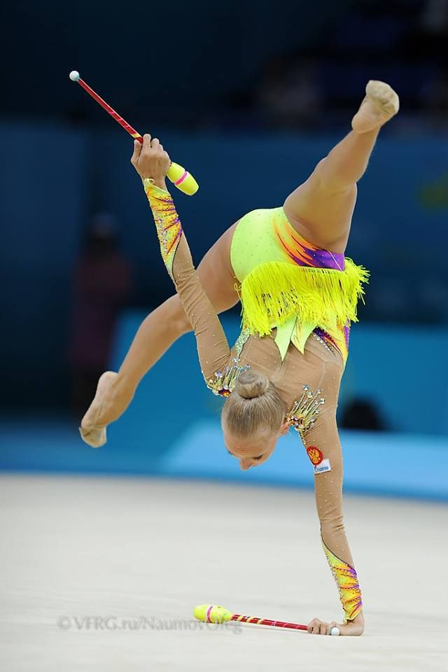
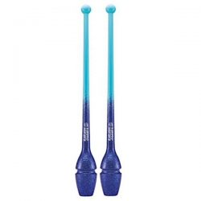

Go back
Clubs:
Clubs are one of the most difficult to use - namely because you have to work with 2 pieces of equipment instead
of 1.
Most gymnasts incorporate vibrant and fiery music in their club routines as well as latin dancing.
- Clubs must be a minimum of 150 grams per club.
- They are mostly made from a harder plastic and an internal rod.
- They are usually covered in decorative tape to match the leotard.

Gymnast performing clubs routine

Typical clubs used in rhythmic gymnstics